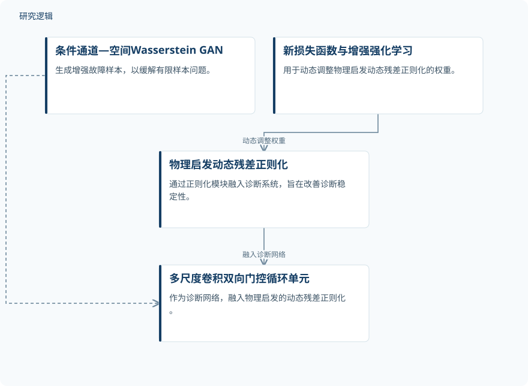

摘要解读
数据稀缺条件下轴承故障诊断的多尺度物理信息强化学习方法
Multi-scale physics-informed reinforcement learning method for bearing fault diagnosis under data scarcity
解读更新 2026-11-10 16:14 · 依据公开摘要整理，未核验全文细节
标注故障数据不足时，轴承诊断如何兼顾准确性与稳定性？这项研究将多尺度网络、物理启发正则化、生成式样本增强与强化学习结合，为理解小样本诊断中的方法协同提供了一个具体案例。
文章目录
轴承诊断的瓶颈：故障标签不足
机械故障识别关系到工业系统的稳定运行，但实际应用中，缺少带标签的故障数据会削弱诊断方法的准确性与泛化能力。本文聚焦这一约束下的轴承故障诊断，提出结合增强强化学习的多尺度物理信息神经网络，简称MPINN-ERL。
这项工作的关注点不只是诊断是否准确，也包括标注数据稀缺时，诊断表现能否保持相对稳定。需要注意，摘要提出了泛化能力不足这一背景问题，但并未具体报告跨工况或跨设备的泛化验证结果。
多尺度网络、样本增强与动态正则化协同
诊断网络采用带有物理启发残差正则化模块的多尺度卷积双向门控循环单元，将物理启发的动态残差正则化融入系统。这里应保留“物理启发”的限定：摘要没有交代残差的具体表达式，也不足以判断它对应哪些物理规律。
针对有限样本问题，作者设计了条件通道—空间Wasserstein生成对抗网络，用于生成增强故障样本。此外，研究引入新的损失函数和增强强化学习算法，动态调整物理启发动态残差正则化的权重，以改善缺少标签时的诊断稳定性。生成样本是数据增强手段，不应视为新增的独立实测样本。
依据摘要整理的MPINN-ERL方法关系


仅概括摘要明确描述的样本增强、正则化与权重调节关系，并非论文原图，不表达具体训练顺序或未报告的实验配置。
下载 SVG图示关系说明
实线表示相邻阶段的信息流，虚线表示跨阶段联系或反馈。
条件通道—空间Wasserstein GAN → 多尺度卷积双向门控循环单元：提供增强故障样本；新损失函数与增强强化学习 → 物理启发动态残差正则化：动态调整权重；物理启发动态残差正则化 → 多尺度卷积双向门控循环单元：融入诊断网络
摘要报告：准确性有竞争力，表现相对稳定
摘要报告，在所评估的轴承故障数据集上，MPINN-ERL取得了具有竞争力的诊断准确性；与若干具有代表性的先进深度学习方法相比，其诊断表现也相对稳定。这支持的是限定于所评估数据集和比较对象的结论，而不是在所有场景下都优于现有方法。
摘要没有给出具体准确率、性能差值或稳定性的度量方式。因此，当前可以确认作者报告的结果方向，但不能据此量化优势，也不能把整体结果拆分归因于某个单独模块。
样本设置与验证边界仍需查阅正文
仅凭摘要，无法判断数据集名称、样本规模、标签稀缺程度、训练与测试划分，以及生成样本的质量评价方式。比较方法的具体配置、重复试验安排和各模块的独立贡献同样未在摘要中说明。这些是当前资料的判断边界，不代表论文没有开展相关工作。
阅读启发：重点看动态权重如何支撑稳定性
阅读启发：对智能运维读者而言，值得进一步阅读的是物理启发残差如何定义、强化学习依据什么反馈调整权重，以及“相对稳定”具体指什么。结合样本增强的评价和模块对照结果，再判断这些环节如何共同支持小样本诊断，比仅关注最终准确率更有助于理解方法的适用边界。
以上为本站阅读启发与建议，不是论文已验证的结论。